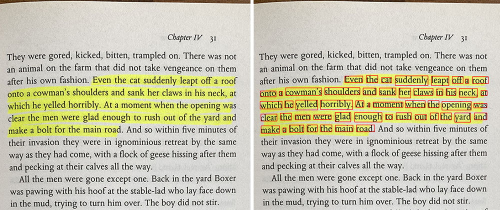

Reading is a wonderful activity that not only entertains but also expands our knowledge and enhances our
imagination.In this blog post, we will explore ten book reading
habits that can help you develop a lifelong love for reading and make the most out of your reading experience.
Establishing reading goals can provide structure and motivation. Whether it's a certain number of books to read in a year or exploring different genres, setting goals helps you stay focused and track your progress.
Create a Reading Routine
Consistency is key when it comes to reading. Dedicate a specific time each day or week for reading and make it a regular part of your schedule. It could be in the morning, during lunch breaks, or before bedtime.
Carry a Book Everywhere
Make it a habit to carry a book with you wherever you go. This way, you can utilize any spare moments throughout the day to read, whether it's during your commute, waiting in line, or during breaks.
Explore Different Genres
Don't limit yourself to a specific genre. Explore a wide range of genres like fiction, non-fiction, mystery, sci-fi, biographies, and more. This allows you to discover new perspectives and broaden your reading horizons.
Create a Cozy Reading Environment:
Creating a cozy reading environment is key to a delightful reading experience. A quiet nook with soft cushions, a comfortable chair, and gentle lighting sets the stage for immersion. By minimizing distractions and surrounding oneself with comforting elements, the mind is free to wander through the pages, unlocking a world of boundless imagination.
Take Notes and Highlight:
Taking notes and highlighting key passages while reading is a powerful practice that enhances comprehension and aids in retaining valuable insights. Jotting down thoughts and underlining essential points helps organize ideas for later reference. By actively engaging with the text, readers develop a deeper connection with the material, enriching their overall reading experience.

Join a Book Club or Reading Group:
Engaging in book clubs or reading groups provides opportunities for discussions, sharing recommendations, and gaining new perspectives on books. It also helps you connect with like-minded readers.
Embrace E-Books and Audiobooks:
Embrace technology and explore e-books and audiobooks. They offer convenience, portability, and the ability to switch between formats based on your preference or circumstances.
Write Reviews or Start a Book Blog:
Express your thoughts and opinions by writing book reviews or starting a book blog. This not only helps you reflect on your reading experience but also connects you with fellow readers and creates a platform for sharing recommendations.
Read Diverse Authors and Voices:
Make a conscious effort to read books by authors from different backgrounds, cultures, and perspectives. Reading diverse literature broadens your understanding of the world and fosters empathy and inclusivity.

Conclusion
By incorporating these ten book reading habits into your daily life, you can enhance your reading experience, expand your knowledge, and develop a lifelong love for books. Remember, reading is not just a hobby; it's a gateway to new worlds and endless possibilities. So, grab a book, find your cozy spot, and embark on a journey of imagination and discovery! It becomes a lifelong journey of exploration, learning, and personal growth. So, set your goals, establish a routine, diversify your reading choices, create a cozy space, actively engage with the text, and connect with other readers. Embrace the joy of reading and embark on a continuous quest for knowledge, entertainment, and self-discovery.Written on 2022-10-13
Featured Post
The Powerful Connection between Exercise and Mental Well-being

The Future of Technology: Exploring Cutting-Edge Innovations
Mastering a New Skill: A Year of Learning Experiments

Exploring Career Paths: A Guide for High School Students